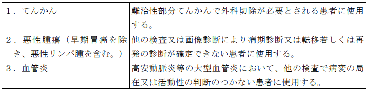

１ 15Ｏ標識ガス剤を用いた場合（一連の検査につき） 7,625点
２ 18ＦＤＧを用いた場合（一連の検査につき） 8,625点
３ 18Ｆ標識フルシクロビンを用いた場合（一連の検査につき） 3,625点
４ アミロイドＰＥＴイメージング剤を用いた場合（一連の検査につき）
イ 放射性医薬品合成設備を用いた場合 13,625点
ロ イ以外の場合 3,725点
注
１ 15Ｏ標識ガス剤の合成及び吸入、18ＦＤＧの合成及び注入、18Ｆ標識フルシクロ
ビンの注入並びにアミロイドＰＥＴイメージング剤の合成（放射性医薬品合成設備を用いた場合に限る。）及び注入に要する費用は、所定点数に含まれる。
２ 別に厚生労働大臣が定める施設基準に適合しているものとして地方厚生局長等
に届け出た保険医療機関において行われる場合に限り算定する。
３ 別に厚生労働大臣が定める施設基準に適合しているものとして地方厚生局長等
に届け出た保険医療機関以外の保険医療機関において行われる場合は、所定点数の100分の80に相当する点数により算定する。
４ １から３までについては、新生児、３歳未満の乳幼児（新生児を除く。）又は
３歳以上６歳未満の幼児に対して断層撮影を行った場合は、新生児加算、乳幼児加算又は幼児加算として、1,600点、1,000点又は600点を所定点数に加算する。ただし、注３の規定により所定点数を算定する場合においては、1,280点、800点又は480点を所定点数に加算する。
通知
(１) ポジトロン断層・コンピューター断層複合撮影は、Ｘ線ＣＴ組合せ型ポジトロンＣＴ装
置を用いて、診断用の画像としてポジトロン断層撮影画像、コンピューター断層撮影画像及び両者の融合画像を取得するものをいい、ポジトロン断層撮影画像の吸収補正用としてのみコンピューター断層撮影を行った場合は該当しない。また、撮影の方向、スライスの数、撮影の部位数及び疾患の種類等にかかわらず所定点数により算定する。
(２) 同一月に、「Ｅ２００」コンピューター断層撮影（ＣＴ撮影）を行った後にポジトロン
断層・コンピューター断層複合撮影を行う場合は、本区分は算定せず、「Ｅ１０１－２」ポジトロン断層撮影により算定する。この場合においては、「Ｅ１０１－２」の別に厚生労働大臣が定める施設基準に適合しているものとして地方厚生（支）局長に届け出ていなくても差し支えない。
(３) 15Ｏ標識ガス剤を用いた場合
ア 「１」の 15Ｏ標識ガス剤を用いた場合（一連の検査につき）について、当該画像診断に
伴って行われる血液ガス分析の費用は所定点数に含まれ、別に算定できない。
イ ターゲットガス（窒素、酸素、二酸化炭素）等の 15Ｏ標識ガス剤の合成及び吸入に係る
費用は所定点数に含まれ、別に算定できない。
(４) 18ＦＤＧを用いた場合
ア 「２」の 18ＦＤＧを用いた場合（一連の検査につき）については、てんかん若しくは血
管炎の診断又は悪性腫瘍（早期胃癌を除き、悪性リンパ腫を含む。）の病期診断若しくは転移・再発の診断を目的とし、次の表に定める要件を満たす場合に限り算定する。ただし、表中の「画像診断」からは、コンピューター断層撮影を除く。次の表に定める要件は満たさないが、「Ｅ１０１－２」ポジトロン断層撮影に定める要件を満たす場合は、「Ｅ１０１－２」により算定する。
(５) 18Ｆ標識フルシクロビンを用いた場合
ア 「３」の 18Ｆ標識フルシクロビンを用いた場合（一連の検査につき）については、初発
の悪性神経膠腫が疑われる患者に対して、腫瘍摘出範囲の決定の補助を目的として、腫瘍の可視化に用いるものとして薬事承認を得ている放射性医薬品を用いて行った場合に限り算定する。
イ 18Ｆ標識フルシクロビンの注入に係る費用は所定点数に含まれ、別に算定できない。
(６) アミロイドＰＥＴイメージング剤を用いた場合
ア 「４」のアミロイドＰＥＴイメージング剤を用いた場合（一連の検査につ
き）については、効能又は効果としてアルツハイマー病による軽度認知障害及び軽度の認知症の進行抑制を有する医薬品に係る厚生労働省の定める最適使用推進ガイドラインに沿って、アルツハイマー病による軽度認知障害又は軽度の認知症が疑われる患者等に対し、効能又は効果としてアルツハイマー病による軽度認知障害及び軽度の認知症の進行抑制を有する医薬品の投与の要否を判断する目的でアミロイドβ病理を示唆する所見を確認する場合に、患者１人につき１回に限り算定する。ただし、効能又は効果としてアルツハイマー病による軽度認知障害及び軽度の認知症の進行抑制を有する医薬品の投与中止後に初回投与から 18 か月を超えて再開する場合は、さらに１回に限り算定できる。なお、この場合においては、本撮影が必要と判断した医学的根拠を診療報酬明細書の摘要欄に記載すること。
イ 「４」の「イ」放射性医薬品合成設備を用いた場合のうち、上記アの場合
については、使用目的又は効果として、アルツハイマー病による軽度認知障害又は認知症が疑われる患者の脳内アミロイドベータプラークの可視化に用いる放射性標識化合物の注射液を製造するために用いるものとして薬事承認又は認証を得ている放射性医薬品合成設備を用いて、アミロイドＰＥＴイメージング剤を医療機関内で製造した場合に限り算定する。ただし、アミロイドＰＥＴイメージング剤の製造に係る衛生管理、品質管理等については、関係学会の定める基準を参考として、十分安全な体制を整備した上で実施すること。なお、アミロイドＰＥＴイメージング剤の合成及び注入に係る費用は所定点数に含まれ、別に算定できない。
ウ 「４」の「ロ」イ以外の場合のうち、上記アの場合については、効能又は
効果として、アルツハイマー病による軽度認知障害又は認知症が疑われる患者の脳内アミロイドベータプラークの可視化に用いるものとして薬事承認を得ているアミロイドＰＥＴイメージング剤を使用した場合に限り算定する。なお、アミロイドＰＥＴイメージング剤の注入に係る費用は所定点数に含まれ、別に算定できない。
エ 「４」のアミロイドＰＥＴイメージング剤を用いた場合（一連の検査につ
き）については、効能又は効果としてアルツハイマー病による軽度認知障害及び軽度の認知症の進行抑制を有する医薬品に係る厚生労働省の定める最適使用推進ガイドラインに沿って、効能又は効果としてアルツハイマー病による軽度認知障害及び軽度の認知症の進行抑制を有する医薬品の投与終了の可否を検討する場合及び 18 か月を超える投与継続の可否を検討する場合は、それぞれの場合につき、さらに１回に限り算定できる。
オ 「４」の「イ」放射性医薬品合成設備を用いた場合のうち、上記エの場合
については、使用目的又は効果として、抗アミロイドベータ抗体薬投与後の脳内アミロイドベータプラークの可視化に用いる放射性標識化合物の注射液を製造するために用いるものとして薬事承認又は認証を得ている放射性医薬品合成設備を用いて、アミロイドＰＥＴイメージング剤を医療機関内で製造した場合に限り算定する。ただし、アミロイドＰＥＴイメージング剤の製造に係る衛生管理、品質管理等については、関係学会の定める基準を参考として、十分安全な体制を整備した上で実施すること。なお、アミロイドＰＥＴイメージング剤の合成及び注入に係る費用は所定点数に含まれ、別に算定できない。
カ 「Ｅ１０１－２」ポジトロン断層撮影の「５」アミロイドＰＥＴイメージ
ング剤を用いた場合（一連の検査につき）又は「Ｅ１０１－４」ポジトロン断層・磁気共鳴コンピューター断層複合撮影（一連の検査につき）の「３」アミロイドＰＥＴイメージング剤を用いた場合（一連の検査につき）を併せて実施した場合には、主たるもののみ算定する。
(７) 撮影に当たって造影剤を使用した場合は、「Ｅ２００」コンピューター断層撮影（ＣＴ
撮影）の「注３」の加算を本区分に対する加算として併せて算定する。
(８) 当該撮影に用いる放射性医薬品については、専門の知識及び経験を有する放射性医薬品
管理者の下で管理されていることが望ましい。